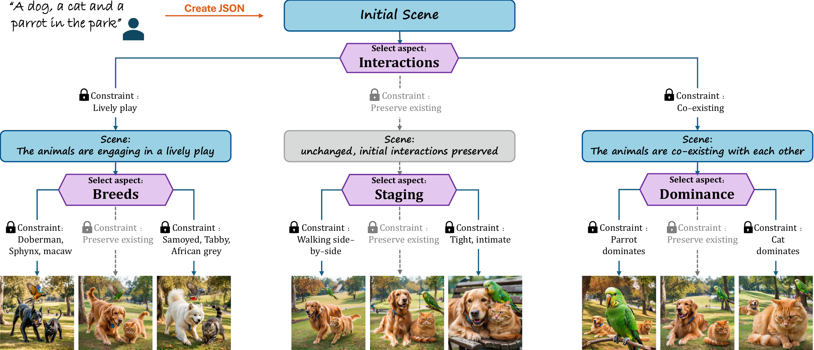
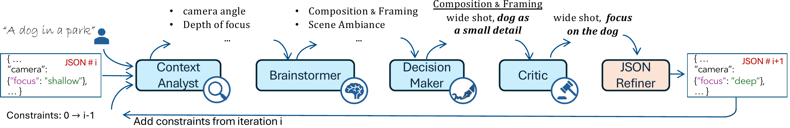
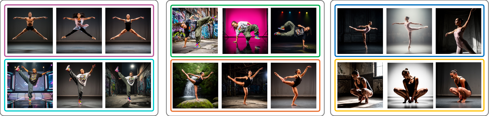
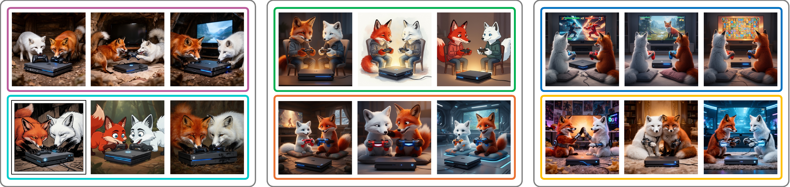

Semantic Browsing: Controllable Diversity for Image Generation
ECCV 2026
Tel Aviv University
* Equal contribution
TL;DR
Semantic Browsing introduces an agentic workflow that turns a single text prompt into a structured, browsable gallery of diverse image interpretations, where each variation reflects meaningful and controllable semantic choices rather than stochastic sampling.
Abstract
Modern text-to-image models produce high-fidelity images that closely follow prompts, but repeated sampling often collapses toward a single semantic interpretation. Semantic Browsing introduces controllable diversity: users explore generated images through meaningful, interpretable variations rather than incidental stochastic changes. The method shifts diversity to the text level, using a multi-agent workflow to expand prompts into structured scene representations and to identify plausible under-specified axes of variation. Each generated branch corresponds to a specific semantic decision, creating a navigable design space while preserving the original prompt intent.

Overview
Semantic diversity through structured scene refinement
Structured scene-tree expansion
- We represent each fully specified scene as a structured JSON, capturing objects, attributes, interactions, and global scene properties.
- The method builds a rooted tree of JSON scenes: each node is a complete scene interpretation and each edge applies one semantic constraint.
- The tree grows iteratively by invoking the agentic workflow at a selected node, producing children that preserve the branch history.

How to expand the tree?
Tree requirements
- Semantic structuring: siblings branch along one shared semantic aspect, such as interaction, composition, or style.
- Heterogeneity: each child realizes that aspect in a distinct way, creating meaningful conceptual spread.
- Plausibility: every refinement remains consistent with the original prompt and with constraints already fixed along its path.
Multi-agent workflow
- Context Analyst: separates fixed constraints from mutable scene details, defining a plausible search space for modification.
- Brainstormer: groups mutable details into high-level semantic aspects, encouraging structured branches rather than isolated edits.
- Decision Maker: selects one impactful aspect and instantiates it into diverse alternative constraints for sibling nodes.
- Critic: validates and refines the proposed constraints so they remain faithful, non-contradictory, and clearly distinct.

Results
Galleries of semantic alternatives
All images shown are derived from a single initial scene. The outer gray groupings organize results that share a direct common ancestor scene. Inside, the colored boxes distinguish sibling branches—parallel variations that share that same parent but differ from one another by a single semantic aspect. This demonstrates how our method introduces meaningful diversity while preserving the coherence of the original user prompt.
1 / 10
Model-Agnostic Generation
Qualitative results demonstrating the transferability of our framework to the FLUX.2 architecture. By utilizing our agentic flow solely for scene generation and FLUX.2 as the rendering backbone, we achieve consistent structured diversity.


Citation
BibTeX
@article{dorfman2026semanticbrowsing,
title = {Semantic Browsing: Controllable Diversity for Image Generation},
author = {Dorfman, Sara and Vishnevsky, Maya and Dahary, Omer and Patashnik, Or and Cohen-Or, Daniel},
journal = {arXiv preprint},
year = {2026}
}